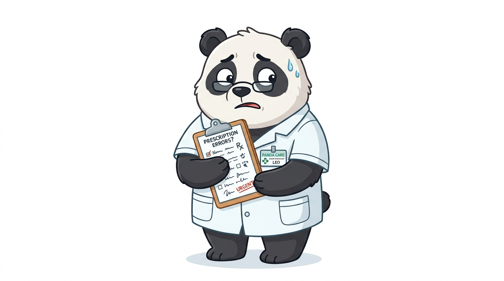
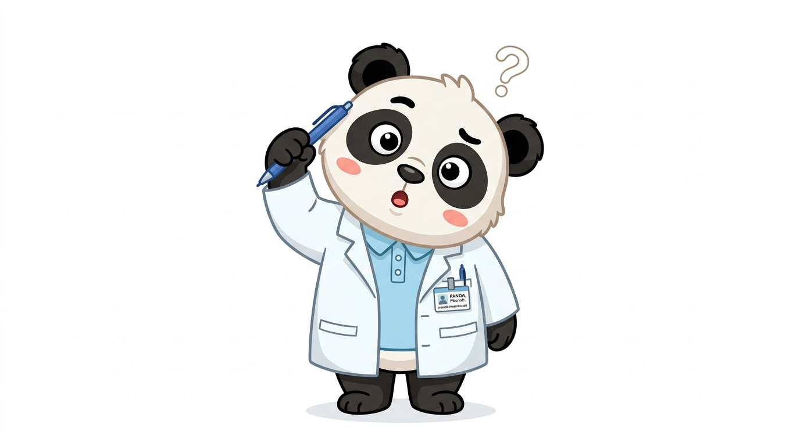
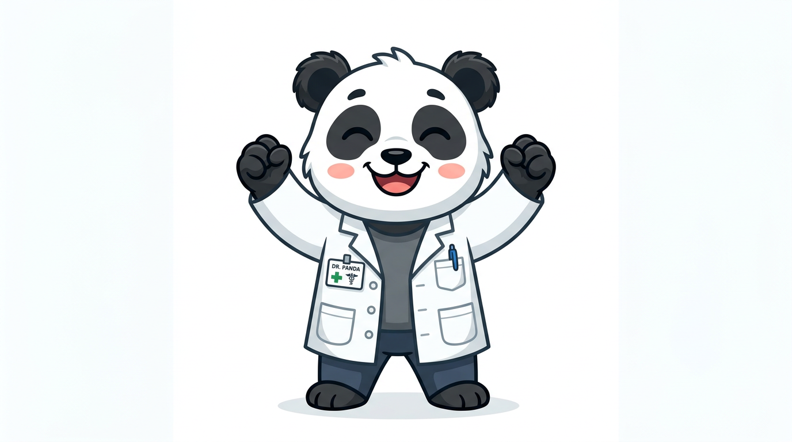

はじめに
現場でよくある場面から

ルーキーさん:
センパイ、患者さんがオランザピンからシクレストに変わったんですが、
どう説明すればいいか…「飲み方が変わりました」だけじゃ不安がられて。

センパイさん:
この2つ、同じ抗精神病薬でも飲み方がまったく違います。
シクレストは「飲む」薬じゃなくて「溶かす」薬なので、そこをしっかり伝えないと
患者さんが飲み込んでしまって効かなくなるんです。
用語を知ろう
患者さんへの説明前に確認
統合失調症や双極性障害の症状を和らげるために使われます。 オランザピンもシクレストも、このグループに属します。
飲み込むと効きません（飲み込んだ場合、ほとんど吸収されない）。 シクレストがこの形です。
気になる動きが出たら遠慮なく薬剤師・医師に伝えましょう。
患者さんに必ず伝えること
この3点を最初に押さえましょう
舌の下に置いて溶かします。飲み込むと吸収されず効きません。溶けるまで約2〜3分、その後10分は飲食を控えてください。唾液は飲み込んでも構いません。
日本の添付文書で「糖尿病の方・既往のある方は禁忌」と明記されています。該当する方は必ず医師にお伝えください。
急にやめると症状が戻ることがあります。やめたい・つらい場合は必ず医師・薬剤師にご相談ください。
2つの薬を比べてみる
一目でわかる違い
- ● 水で飲む錠剤（OD錠など剤形は処方により異なる）
- ● 1日1回
- ● 統合失調症・双極性障害・制吐
- ● 糖尿病・既往は禁忌
- ● 舌の下で溶かす（舌下錠）
- ● 1日2回（朝・夜）
- ● 統合失調症・双極性障害
- ● 重度の肝障害は禁忌
| 比較ポイント | オランザピン | シクレスト |
|---|---|---|
| 薬の形 | 経口錠（水で飲む） | 舌下錠（舌下で溶かす） |
| 1日の回数 | 1日1回 | 1日2回（朝・夜） |
| 食事のタイミング | 食事に関係なく飲める | 服用後10分は 飲食を控える |
| 口の感覚 | 特になし | しびれ・苦味が 出ることがある |
| 特に注意する禁忌 | 糖尿病・糖尿病既往 | 重度の肝障害 |
| 体重増加・代謝への影響 | 比較的多い | あり（要モニタリング） |
オランザピンの飲み方
「普通に水で飲む」錠剤です
- PTPシート（アルミの包装）から取り出してから飲む（シートのまま飲まない）
- 食事のタイミングは関係なし。ただし毎日同じ時間に飲む習慣をつけると飲み忘れが減る
- 口渇・多飲・多尿が出たら血糖値が上がっているサインかもしれない。すぐに連絡を
シクレストの飲み方
「溶かす薬」です。飲み込まないのがポイント
ルーキーさん:
「舌の下に置く」って、患者さんに伝えても「え、飲まないんですか？」って毎回聞かれます。
センパイさん:
「この薬は口の中で溶けて、舌の粘膜から吸収される薬です。飲み込むと胃では吸収されないので効きません」と伝えると理解してもらいやすいです。製品ごとに使い方が決まっているので「この薬専用のやり方」として教えましょう。
シクレストの正しい使い方（1回の手順）
- 誤って飲み込んだ場合：その回の効果が弱くなる可能性がある。次回から舌下で正しく使うよう意識してもらう
- 口のしびれ・苦味：薬の特性で最初に出やすい。多くは一時的。続く場合は薬剤師に相談
- すぐ水を飲んでしまった：吸収が下がる可能性あり。10分後以降に飲むよう伝える
気をつけたい副作用
体験したらすぐ伝えてほしいこと
2つの薬に共通する副作用
特に飲み始めに出やすい。運転・高所作業は控える。時間が経つと慣れることが多い
食欲や代謝に影響することがある。定期的な体重測定と血液検査が大切
錐体外路症状。動きにくさ・じっとできない感覚も含む。出た場合は必ず報告を
高熱・筋肉の極端な硬直・意識障害。まれだが命に関わる。すぐに救急受診
オランザピン特有
- 血糖値の上昇：口渇・多飲・多尿が出たらすぐ連絡
- 便秘・口渇（抗コリン作用）
- 血中脂質の上昇
シクレスト特有
- 口のしびれ・苦味（舌下投与の特性。多くは一時的）
- めまい・立ちくらみ（起立性低血圧）
- 口腔内の刺激感（まれに口内炎様の反応）
- 口渇・頻尿・体重減少（※血糖が上がると体が糖を尿で排出しようとするため、水をたくさん飲みたくなったり尿が増えたりする。体重減少もそのサインのひとつ）
- 高熱・筋肉がひどく固まる（悪性症候群の可能性）
- じっとしていられない・足がむずむずする（アカシジア）
- 突然の強いめまい・意識がぼんやりする
※ 心配なことはいつでも薬局・処方医にご相談ください
禁忌・注意が必要な方
処方前に必ず確認するポイント
- 糖尿病・糖尿病の既往のある方
- 昏睡状態・中枢神経抑制下の方
- 成分に過敏のある方
- 重度の肝障害のある方
- 成分に過敏のある方
オランザピン
- ・フルボキサミン → 濃度が上がる
- ・シプロフロキサシン → 濃度が上がる
- ・カルバマゼピン・喫煙 → 濃度が下がる
- ・アルコール → 眠気が強まる
シクレスト
- ・フルボキサミン → 濃度が上がる
- ・QT延長を起こす薬 → 不整脈リスク
- ・パロキセチン → 相互作用あり
- ・アルコール → 眠気が強まる
切り替え時の注意
オランザピン→シクレストなど変更があったとき

ルーキーさん:
「量が同じなら効果も同じ」って伝えていいですか？
センパイさん:
それはダメです。この2つは受容体への作用も投与経路も違うので、
mg数が同じでも体への影響は異なります。
「切り替え直後は体が慣れるまで様子を見てほしい」と伝えて、
変化があればすぐ連絡してもらいましょう。
- mg数が同じでも効果は単純に比較できない。受容体の効き方・1日の回数・吸収経路が違う
- 切り替え直後は眠気・めまい・気分の変化が出やすい期間。体調の変化はすぐ報告を
- シクレスト開始時は舌下服用の方法を必ず再確認する（飲み込みミスが起きやすい）
- 体重・血糖・脂質のモニタリングは切り替え後も継続する
まとめ
これで自信を持って説明できます
センパイさん:
この2つの最大の違いは「飲み方」です。シクレストは舌下で溶かす、これだけは絶対に伝えましょう。
あとはオランザピンの糖尿病禁忌、どちらも急にやめない、この3点が柱です。

ルーキーさん:
比較表とフローチャートがあるだけで、頭の中が全然違います！
次の患者さんにこの図解を見せながら説明してみます！
薬剤師チェックリスト
- シクレストは「舌の下で溶かす薬」と説明した
- 服用後10分は飲食しないよう伝えた
- オランザピンの糖尿病禁忌を確認した
- 眠気・ふらつき・体重増加などの副作用を伝えた
- 自己判断でやめないよう伝えた
- 受診すべき症状（悪性症候群・血糖上昇サインなど）を伝えた
患者さんへ：これだけ覚えてください
▶ オランザピンを飲んでいる方
- 水をたくさん飲みたくなる・尿が増えた感じがしたら薬剤師に相談
- 定期的な体重測定と血液検査を忘れずに
▶ シクレストを飲んでいる方
- 舌の下で溶かす。飲み込まない
- 溶けた後10分は飲食しない（唾液は飲み込んでOK）
- 最初に口のしびれ・苦味が出ることがあるが、多くは一時的
▶ 共通
- 急に薬をやめない。やめたいときは医師・薬剤師に相談
- 高熱・強い筋肉の硬直・じっとしていられない感じが出たらすぐ受診